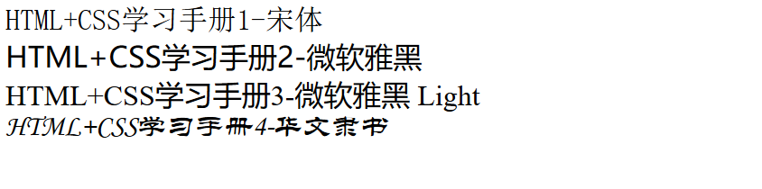
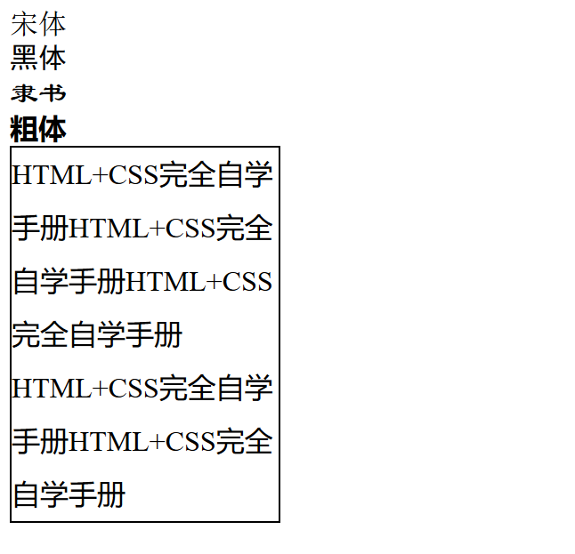
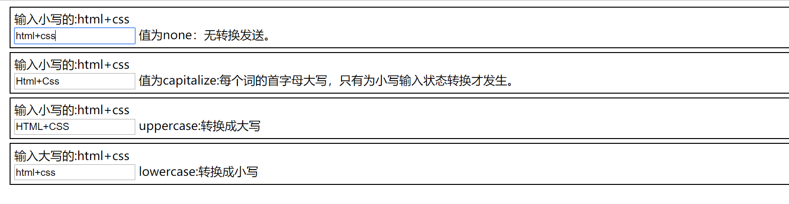

21.1.19. 如何用DIV布局¶
<!DOCTYPE html>
<html lang="en">
<head>
<meta charset="UTF-8">
<title>如何使用DIV布局</title>
</head>
<style type="text/css">
#header{
width: 778px;
margin: auto;
border: 1px solid#bbbbbb;
}
#logo{
width: 180px;
height: 00px;
float: left;
border: 1px solid#cccccc;
}
.ad468{
width: 468px;
height: 60px;
float: left;
margin: 20px 0px 0px 100px;
border: 1px solid#cccccc;
}
#banner{
width: 778px;
height: 30px;
margin: 5px 0px;
text-align: center;
border: 1px solid#cccccc;
}
#content{
width: 778px;
height: auto;
border: 1px solid#cccccc;
}
#newsad{
width: 260px;
height: 260px;
margin: 5px;
float: right;
border: 1px solid#cccccc;
}
#news{
width: 480px;
height: 260px;
margin: 5px;
border: 1px solid#cccccc;
}
#bottom{
width: 778px;
margin: auto;
height: 80px;
margin-top: 10px;
border: 1px solid#cccccc;
}
</style>
<body>
<div id="header">
<div id="logo">log---网站图标</div>
<div class="ad468">468像素广告</div>
</div>
<div id="banner">导航条</div>
<div id="content">
<div id="newsad">新闻右边的广告</div>
<div id="news">新闻内容</div>
</div>
<div id="bottom">网页底部</div>
</body>
</html>
DIV+CSS组合显示字体大小¶
<!DOCTYPE html>
<html lang="en">
<head>
<meta charset="UTF-8">
<title>字体大小</title>
</head>
<style type="text/css">
#xxsmall{
font-size: xx-small;
}
#xsmall{
font-size: x-small;
}
#small{
font-size: small;
}
#large{
font-size: large;
}
#xlarge{
font-size: x-large;
}
#xxlarge{
font-size: xx-large;
}
</style>
<body>
<p id="xxsmall">HTML+CSS学习手册1</p>
<p id="xsmall">HTML+CSS学习手册2</p>
<p id="small">HTML+CSS学习手册3</p>
<p id="large">HTML+CSS学习手册4</p>
<p id="xlarge">HTML+CSS学习手册5</p>
<p id="xxlarge">HTML+CSS学习手册6</p>
</body>
</html>

div+css 字体风格¶
<!DOCTYPE html>
<html lang="en">
<head>
<meta charset="UTF-8">
<title>字体类型</title>
</head>
<style type="text/css">
#fontclass1{
font-family: "宋体";
}
#fontclass2{
font-family: "微软雅黑";
}
#fontclass3{
font-family: "微软雅黑 Light";
}
#fontclass4 {
font-family: 华文隶书;
}
</style>
<body>
<div id="fontclass1">HTML+CSS学习手册1-宋体</div>
<div id="fontclass2">HTML+CSS学习手册2-微软雅黑</div>
<div id="fontclass3">HTML+CSS学习手册3-微软雅黑 Light</div>
<div id="fontclass4">HTML+CSS学习手册4-华文隶书</div>
</body>
</html>

div+css设置行距¶
<!DOCTYPE html>
<html lang="en">
<head>
<meta charset="UTF-8">
<title>设置行距</title>
</head>
<style type="text/css">
#font5{
width: 230px;
border: 1px solid#000000;
line-height: 30px;
}
</style>
<body>
<div id="font5"> HTML+CSS 完全自学手册HTML+CSS 完全自学手册HTML+CSS 完全自学手册HTML+CSS 完全自学手册</div>
</body>
</html>
div+css 动手实验¶
<!DOCTYPE html>
<html lang="en">
<head>
<meta charset="UTF-8">
<title>字体实例手把手01</title>
</head>
<style type="text/css">
#font1{
font-family: "宋体";
}
#font2{
font-family: "黑体";
}
#font3{
font-family: "隶书";
}
#font4{
/* 设置字体为粗体 */
font-weight: bolder;
}
#font5{
width: 150px;
border: 1px solid#000000;
line-height: 30px;
word-spacing: 10px;
letter-spacing: 5px;
}
</style>
<body>
<div id="font1">宋体</div>
<div id="font2">黑体</div>
<div id="font3">隶书</div>
<div id="font4">粗体</div>
<div id="font5">HTML+CSS完全自学手册HTML+CSS完全自学手册HTML+CSS完全自学手册
HTML+CSS完全自学手册HTML+CSS完全自学手册
</div>
</body>
</html>

文本大小写属性转换¶
<!DOCTYPE html>
<html lang="en">
<head>
<meta charset="UTF-8">
<title>text-transform属性</title>
</head>
<style type="text/css">
.mydiv{
width: auto;
margin: 5px;
padding: 5px;
border: 1px solid#000000;
}
/* 设置文本修饰 */
#tran1{
text-transform: none;
}
#tran2{
/* 转为大写 */
text-transform: capitalize;
}
#tran3{
/* 转为首字母大写 */
text-transform: uppercase;
}
#tran4{
/* 转为小写 */
text-transform: lowercase;
}
</style>
<body>
<div class="mydiv">
输入小写的:html+css<br>
<input type="text" id="tran1">
值为none：无转换发送。
</div>
<div class="mydiv">
输入小写的:html+css<br>
<input type="text" id="tran2">
值为capitalize:每个词的首字母大写，只有为小写输入状态转换才发生。
</div>
<div class="mydiv">
输入小写的:html+css<br>
<input type="text" id="tran3">
uppercase:转换成大写
</div>
<div class="mydiv">
输入大写的:html+css<br>
<input type="text" id="tran4">
lowercase:转换成小写
</div>
</body>
</html>
